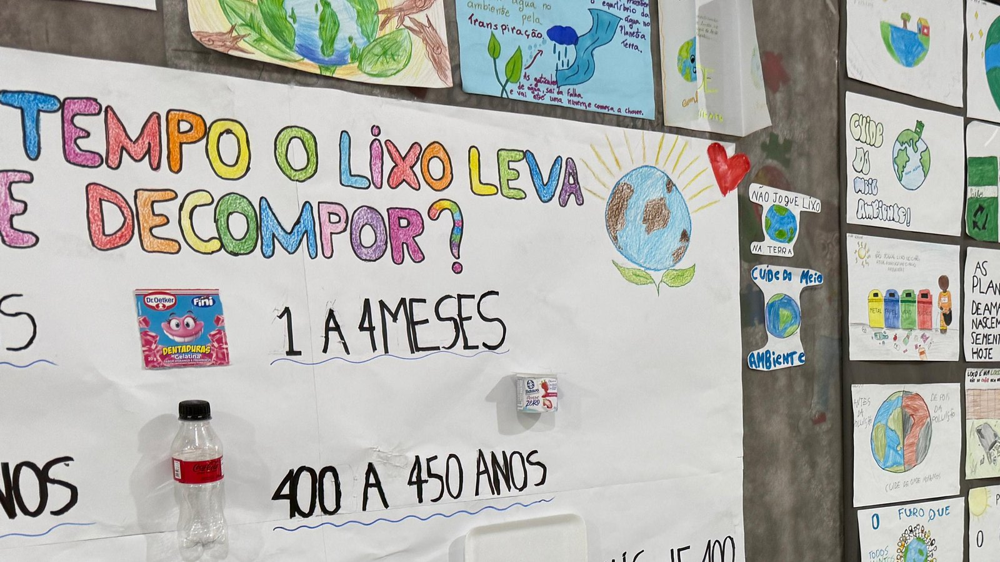

Oficinas de cultura e curso de qualificação: o que dá para fazer de graça em Itapema agora
Oficinas de cultura e curso de qualificação, os dois de graça, na mesma semana.
São dois dias de exposição aberta a quem quiser entrar. Os trabalhos foram feitos pelos estudantes ao longo do semestre, e o tema é preservação ambiental.
Em 30 segundos · Modo de Leitura, formato original Santa Informa
A ECIM Maria Linhares de Souza faz a Feira do Conhecimento nesta sexta (7) e no sábado (8), com tema de meio ambiente.
Sexta: das 8h30 às 11h e das 13h30 às 16h30. Sábado: das 8h30 às 11h.
É na rua 810, nº 310, bairro Alto São Bento. A visitação é aberta à comunidade, não só a pais de aluno.
Meio AmbientePublicada em Redação Santa Informa

A ECIM Maria Linhares de Souza abre as portas nesta sexta e no sábado para mostrar o que os alunos produziram ao longo do semestre. O recorte deste ano é meio ambiente: preservação, sustentabilidade e cuidado com o planeta, tratados pelos próprios estudantes.
O detalhe que costuma passar batido em aviso de escola: a visitação é aberta à comunidade. Não é reunião de pais. Quem mora no bairro e quiser ver pode entrar.
Sexta-feira, 7 de agosto: das 8h30 às 11h e das 13h30 às 16h30.
Sábado, 8 de agosto: das 8h30 às 11h.
Endereço: rua 810, nº 310, bairro Alto São Bento.
Segundo a diretora Angela Beatriz Bósio, a feira serve para valorizar o aprendizado e o protagonismo do estudante. Traduzindo: o aluno não entrega trabalho só para o professor, entrega para quem aparecer.
E o tema conversa com a cidade. Itapema discute obra de orla, drenagem e crescimento vertical o tempo todo. Quem vai herdar o resultado disso está no Alto São Bento montando cartaz sobre o assunto.
O resumo de 30 segundos está no topo e a versão completa é o texto acima. Aqui ficam as três leituras da casa sobre o mesmo assunto.
Clara, a otimista
Feira de escola aberta ao bairro é das poucas ocasiões em que a comunidade entra na escola sem ser para reclamar ou buscar boletim. Vale a caminhada.
E criança que passa um semestre pensando em preservação costuma virar adulto que separa o lixo sem ninguém mandar. É investimento de prazo longo, do tipo que não aparece em inauguração.
Seu Prudêncio, o criterioso
Merece atenção a divulgação. O aviso saiu no mesmo dia em que a feira começou, o que reduz muito a chance de vizinho não ligado à escola aparecer. Uma sugestão útil seria anunciar esse tipo de evento com uma semana de antecedência.
Vale acompanhar também se o trabalho tem continuidade. Feira de meio ambiente que termina no sábado e não vira prática dentro da escola, como coleta seletiva ou horta, corre o risco de virar cartaz bonito e ponto final.
Dito isso, abrir a escola para a comunidade e colocar o aluno para explicar o próprio trabalho é método pedagógico correto, e merece o registro.
Caco, o sarcástico
Feira do conhecimento sobre meio ambiente numa cidade que está construindo torre até onde a vista alcança. As crianças estão dando aula para o adulto errado.
Aberta à comunidade, das 8h30 às 11h. Ou seja, no horário em que a comunidade está trabalhando para pagar o condomínio da torre.
Brincadeira à parte: se der para passar no sábado de manhã, passe. É de graça e a curadoria é honesta.
Fontes: Prefeitura de Itapema, Secretaria de Educação.
Oficinas de cultura e curso de qualificação, os dois de graça, na mesma semana.
Consulta, dentista e psicólogo de graça no Jardim Praiamar, hoje e amanhã.
O que é permitido na Reserva do Arvoredo, e por que quase todo guia erra.